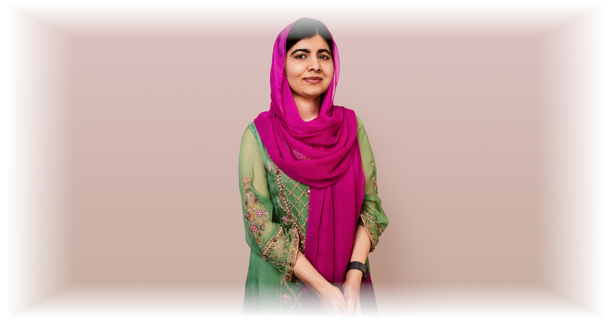
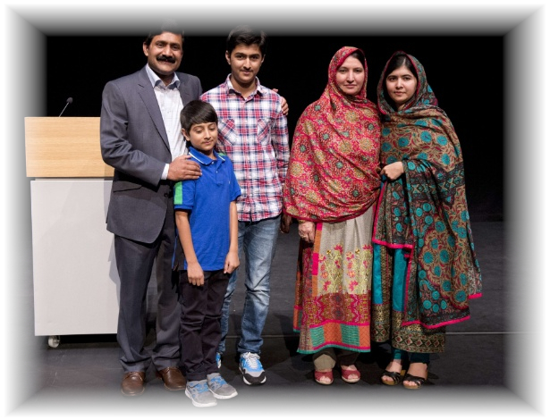
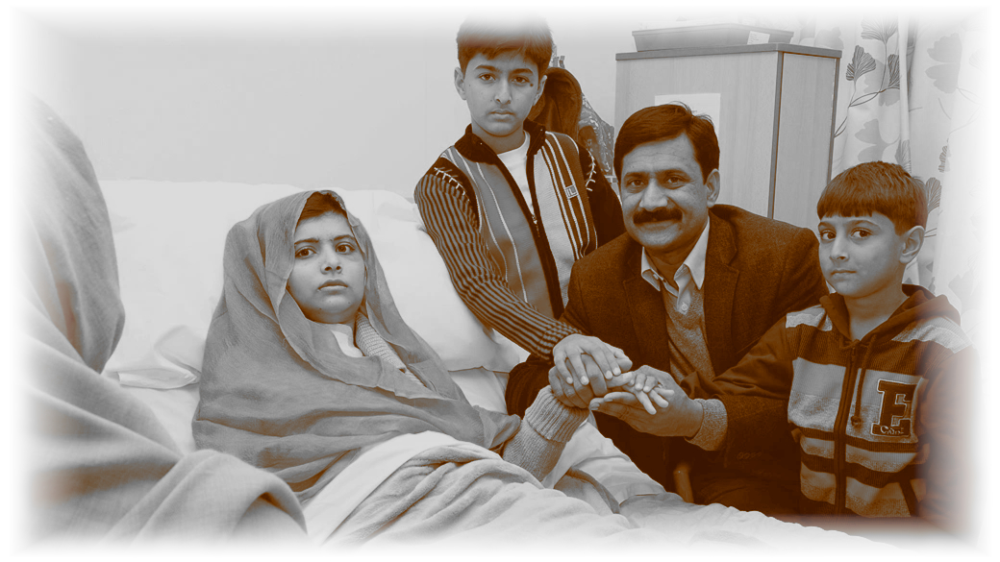
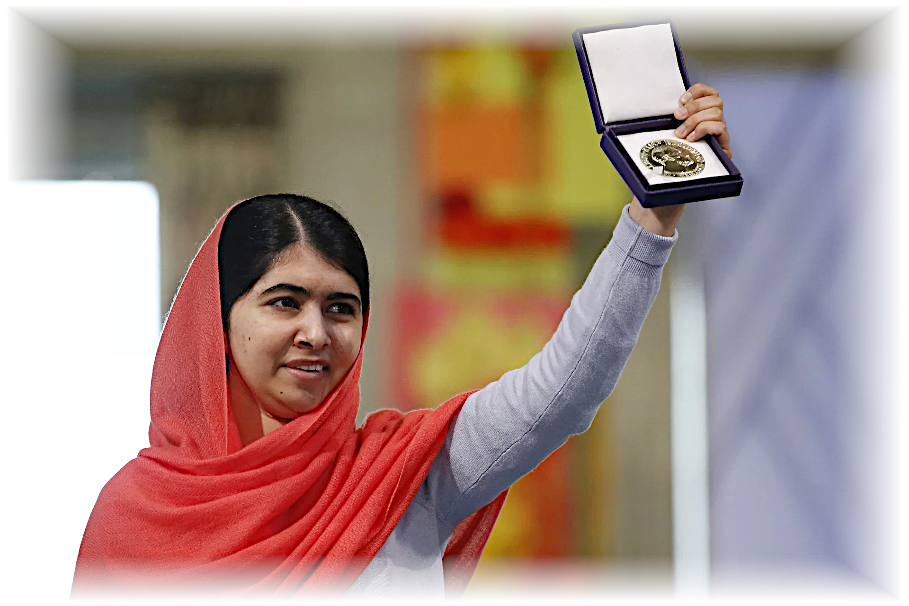
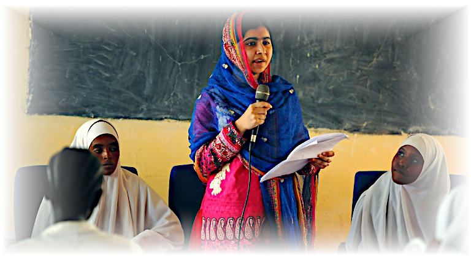
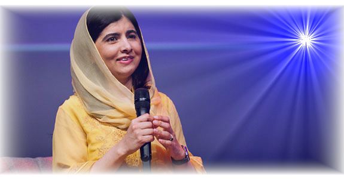

A História de Malala Yousafzai
Introdução

Malala Yousafzai, uma jovem paquistanesa que se tornou um símbolo internacional da luta pela educação e igualdade de gênero, tem uma história de vida que transcende fronteiras e inspira milhões ao redor do mundo. Desde o momento em que uma bala atingiu sua cabeça, em um trágico ataque do Talibã em 2012, até sua impressionante recuperação e seus contínuos esforços, Malala personifica a resiliência e a busca incansável por um futuro melhor.
Infância e Ativismo Social

Malala Yousafzai nasceu em 12 de julho de 1997, no Vale do Swat, no Paquistão. Desde cedo, ela demonstrou uma paixão pelo aprendizado e uma determinação em desafiar as normas restritivas impostas pelo Talibã, que buscava proibir a educação de meninas na região. Com o apoio de seu pai, que também é ativista educacional, Malala começou a escrever anonimamente um blog para a BBC Urdu, compartilhando suas experiências sob o regime opressor.
Ataque e Recuperação

Em 9 de outubro de 2012, o mundo ficou chocado ao saber que Malala havia sido baleada na cabeça por um membro do Talibã enquanto voltava para casa da escola. O ataque brutal não apenas ameaçou sua vida, mas também serviu como um catalisador para uma onda de solidariedade global. Malala foi transferida para o Reino Unido, onde recebeu tratamento médico intensivo e passou por uma longa jornada de recuperação física e emocional.
O Compromisso Contínuo

Apesar do ataque violento, Malala emergiu ainda mais determinada a continuar sua luta pela educação e pela igualdade. Em 2014, ela se tornou a mais jovem laureada com o Prêmio Nobel da Paz, aos 17 anos, por seu trabalho incansável em prol dos direitos das meninas à educação. Fundou a Fundação Malala, uma organização que promove a educação em todo o mundo e defende os direitos das mulheres.
Legado Duradouro

O impacto de Malala Yousafzai ressoa em todo o mundo. Ela inspirou mudanças políticas e sociais, aumentou a conscientização sobre a importância da educação e incentivou jovens a alçarem suas vozes em busca de um mundo mais justo. Seu compromisso com a paz, a justiça e a igualdade continua a inspirar gerações futuras a lutarem por um futuro onde todas as crianças possam acessar oportunidades educacionais.
Conclusão

A história da vida de Malala Yousafzai é uma prova do poder indomável da determinação humana diante das adversidades. Sua coragem, resiliência e paixão pela educação transformaram uma tragédia pessoal em um movimento global de mudança. Malala nos lembra que, independentemente das circunstâncias, cada indivíduo tem o potencial de fazer a diferença e criar um impacto duradouro no mundo.
Richard P. G. de Carvalho - Jornalista e Escritor
Este artigo foi escrito para WC NEWS. A reprodução deste conteúdo é permitida desde que seja devidamente creditada a fonte.